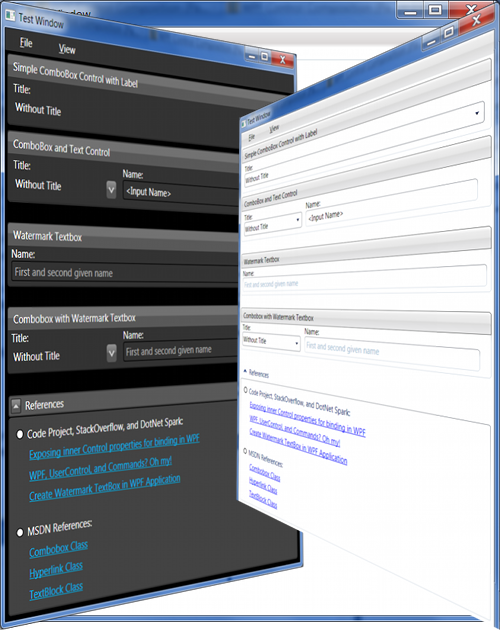

Introduction
The theming technique in WPF is an effective way of coding once and enhancing the user
experience through individual user interfaces (A Reusable WPF Autocomplete TextBox (Part 2)). This part of the two article series concentrates on theming a watermark textbox control discussed in a previous part. We are going to create a look-less custom watermark textbox control to be more specific.

Please review the
previous article if you have any questions beyond theming.
Compiling the Code
StyleCop
I use StyleCop in my projects to make the code readable in a uniform way. So, if you should get an error when compiling the project, you can either download and install StyleCop, or edit/remove the corresponding entries in each .csproj file:
<Import Project="$(ProgramFiles)\MSBuild\StyleCop\v4.7\StyleCop.Targets" />
Theming the Demo Application
Normally, I am using a seperate DLL project to add theming to any other application.
But to make things simple, I have simply added:
- A Themes folder with 3 themes
- A MainCommands command class to bind and execute a viewTheme command
- A Menubar to let the user selet a theme
- A TypeOfTheme enumeration and some code based on it to manage, select and change to a particular theme when requested
The core theming function in the main TestWindow is the
ChangeThemeCommand_Executed function. It accepts the name of the theme to change to as string parameter, which is supplied
from the MenuBar item calls. The theme name is mapped to an enumeration which in turn is mapped to a static const string array containing the resource address of the main theme XAML file.
I know this is all very hands on and not what you would program in a production scenario.
But the demo application is really just a necessity to get us going for what we came here.
We came here to learn more about programming look-less controls. So, lets discuss this next.
Creating a Look-Less Custom Control
Theming a WPF control contained in a DLL project requires 4 things:
- A Themes folder with a Generic.xaml file
- A ThemeInfo entry in the AssemblyInfo file
- Removing the XAML from the User Control
- Making helper classes public
These items are discussed next.
Generic.xaml
Making a WPF control fully skinnable requires a Themes folder with a Generic.xaml file in it. The Generic.xaml file should contain a default declaration of the custom control. That default declaration is applied by the WPF framework whenever there is no alternative declaration.
In our case, the Generic theme in the test application does not contain a definition for the
TextBoxWithWatermark control. And therefore, the defintion in the
Themes/Generic.xaml file in the DLL project is applied when the user selects the Generic theme in the demo application. The other two themes contain a seperate definition for the
TextBoxWithWatermark control, which enables us to color the watermark in theme specific colors.
Explaining all the content in the
Generic.xaml file and the theming files in the demo application would be way too much for this article. But you should note the following:
The two color statements at the beginning of the
Generic.xaml file in the Themes folder of the DLL project:
<SolidColorBrush x:Key="brushWatermarkForeground" Color="#AA000033" />
<SolidColorBrush x:Key="brushWatermarkBackground" Color="Transparent" />
... define the background and foreground color of the watermark shown in the textbox.
These color resources are consumed in the XAML further below.
<Style TargetType="{x:Type local:TextBoxWithWatermark}">
<Setter Property="SnapsToDevicePixels" Value="True"/>
<Setter Property="Template">
<Setter.Value>
<ControlTemplate TargetType="{x:Type local:TextBoxWithWatermark}">
<ControlTemplate.Resources>
<BooleanToVisibilityConverter x:Key="BooleanToVisibilityConverter" />
<local:WatermarkHelper x:Key="WatermarkHelper" />
</ControlTemplate.Resources>
<Grid>
<Grid.RowDefinitions>The Style tag at the root tells WPF that we are going to define a style for each and every
TextBoxWithWatermark control that does not come with an alternative style. An alternative style can either be defined in:
- A theme specific XAML file (see
DarkExpresssion/SimpleStyles/SimpleControls.xaml) or - through a control specific style resource assigned to the
Style property
(not covered here, see How to: Define and Reference a Resource).
The most basic style application includes a Setter property tag in which the Property attribute selects the properties' name, and the Value attribute the actual value that we want to define for this particular style.
The Template setter is a little more elaborate. It can be used to define a ControlTemplate for our custom control. The control template contains pretty much the same code as the original user control from the first part of this article. Compare the contents in the TextBoxWithWatermark.xaml file from part 1 with the SimpleControls/Themes/Generic.xaml file in part 2 and you will notice that I moved the UserControl.Resources section into the ControlTemplate.Resources and kept the layout in the Grid further below.
ThemeInfo
Defining a default look and feel for a control in Themes/Generic.xaml file is only half the price because we also have to tell WPF to look there if a style is not defined. We do this by stating the ThemeInfo attribute in the SimpleControls/Properties/AssemblyInfo.cs file:
[assembly: ThemeInfo(
ResourceDictionaryLocation.None, ResourceDictionaryLocation.SourceAssembly )] Removing XAML portion from a User Control
A custom look-less control does not define its own GUI. Instead the GUI is either defined in the Generic.xaml file of the source assembly or in the applications theming. Therefore, I have removed the TextBoxWithWatermark.xaml portion from the TextBoxWithWatermark.xaml.cs user control of part 1 and created effectively a new code behind file in TextBoxWithWatermark.cs.
Comparing TextBoxWithWatermark.xaml.cs from part 1 with TextBoxWithWatermark.cs from part 2 reveals that I only added a static constructor and removed the standard constructor (since this.InitializeComponent(); is no longer used in a custom control.
static TextBoxWithWatermark()
{
DefaultStyleKeyProperty.OverrideMetadata(typeof(<b>TextBoxWithWatermark</b>),
new FrameworkPropertyMetadata(typeof(<b>TextBoxWithWatermark</b>)));
} The DefaultStyleKeyProperty property tells WPF to find the default style
for the TextBoxWithWatermark control class in the Themes/Generic.xaml file.
This is done with a static constructor because it applies to each and every TextBoxWithWatermark control object that does not get its style through an alternative route as discussed above.
It is worthwhile to point out that you can use the OnApplyTemplate method to initialize a look-less control whenever a new theme is applied to it. This was not necessary here so I did note implement that method.
Making Helper Classes Public
This part of creating a custom look-less control is not strictly necessary for every custom control but I included it here because it might raises a few eye browse otherwise.
The 'special' thing about the watermarked textbox is that it uses a converter (Using ValueConverter and MultiValueConverter in WPF) to decide whether the watermark should be shown or not.
Comparing WatermarkHelper.cs converter from part 1 with that of part 2 reveals that I changed the visibility of the class from internal to public. This change was necessary
because the ControlTemplates in the ExpressionDark and WhistlerBlue themes would otherwise not have worked and I did not see a reason to strictly hide this in the custom control implementation.
Making the converter public and part of the ControlTemplate adds flexibility to this implementation because it enables everyone to implement there own converter and showing the watermark based on there own logic without having to change the original implementation in the DLL project.
Conclusions
This series of two articles has taught me that control composition in a user control can save me a lot of work if it is done at the right level. The simplicity of binding dependency properties is so nice I could almost write a code generation program for it (and maybe I will some day).
I hope you enjoyed this series. Please vote for this article and give me your feedback if you find something wrong or otherwise noteworthy.
History
- 20-February 2012 Initial creation
- 16-March 2012 Small bug fix in source (Dependency Properties in WebHyperlink control are specified correctly)